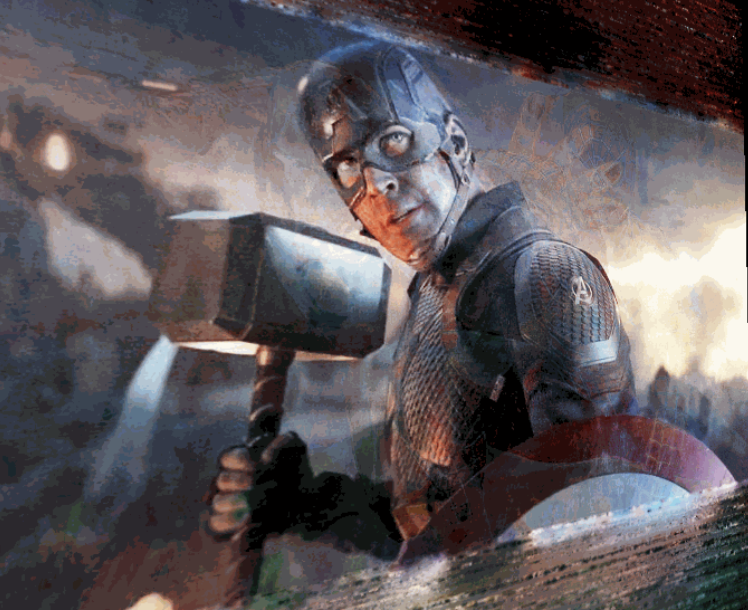

Neural rendering · Experiment
Fun with NeRF
A playful experiment that turns four related images into a lenticular animation by changing how a neural radiance field samples images and rays.

The idea
Instead of treating NeRF only as a tool for conventional novel-view synthesis, I wanted to see what would happen if the input images represented changing subjects or moments. The goal was an image that appears to shift as its virtual viewpoint changes—similar to a lenticular print.
How it works
The project builds on my simplified Instant NGP implementation. A custom data-loading path changes how the four input images and their rays are presented during training and testing.
- Train from four images with roughly matching dimensions.
- Control the effect through the data loader and generated camera extrinsics.
- Render the learned representation as an animated GIF.
Why it matters
The experiment is small, but it makes an important idea tangible: the behavior of a learned scene representation depends as much on the structure of its observations as on the network itself. Changing the sampling process can turn a reconstruction pipeline into a creative rendering tool.